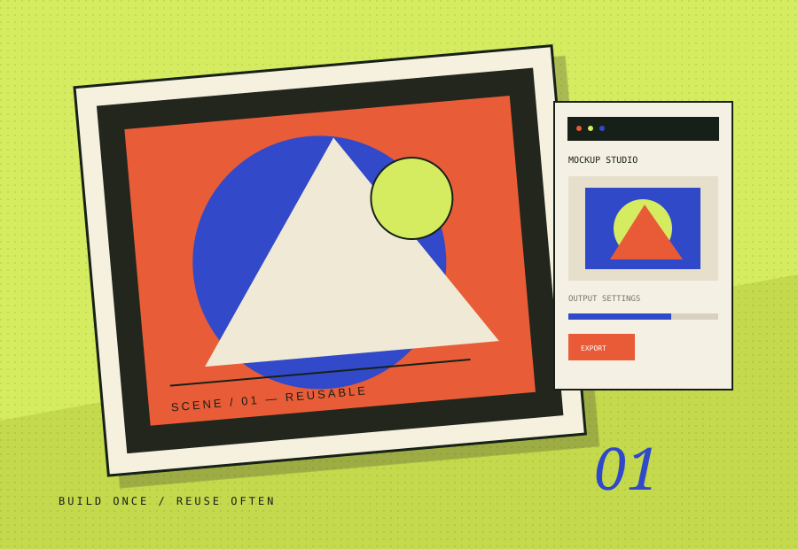

MAKE THE SCENE. KEEP THE SCENE.
FrameStudio
A repeatable way to create framed-art mockups — build a scene once, place new artwork into it, and export a consistent batch.

THE STARTING POINT
Give the problem
a useful shape.
FrameStudio is built around a simple production problem: recreating the same photo setup for every new artwork wastes time and makes a collection look inconsistent. The workspace turns that setup into something reusable.
The workflow is organized around reusable scenes, editable layers, perspective mapping and batch output. Instead of treating each export as a one-off image, the tool makes the scene itself the reusable asset.
WHAT'S IN THE BUILD
- 01Create a scenario and prepare its visual layers.
- 02Map artwork into a frame with perspective-aware placement.
- 03Save templates and reuse them with new designs.
- 04Generate consistent mockups in batches.
THE DESIGN INTENT
Make a technical workflow feel approachable: fewer repeated steps, clearer setup and a predictable result.